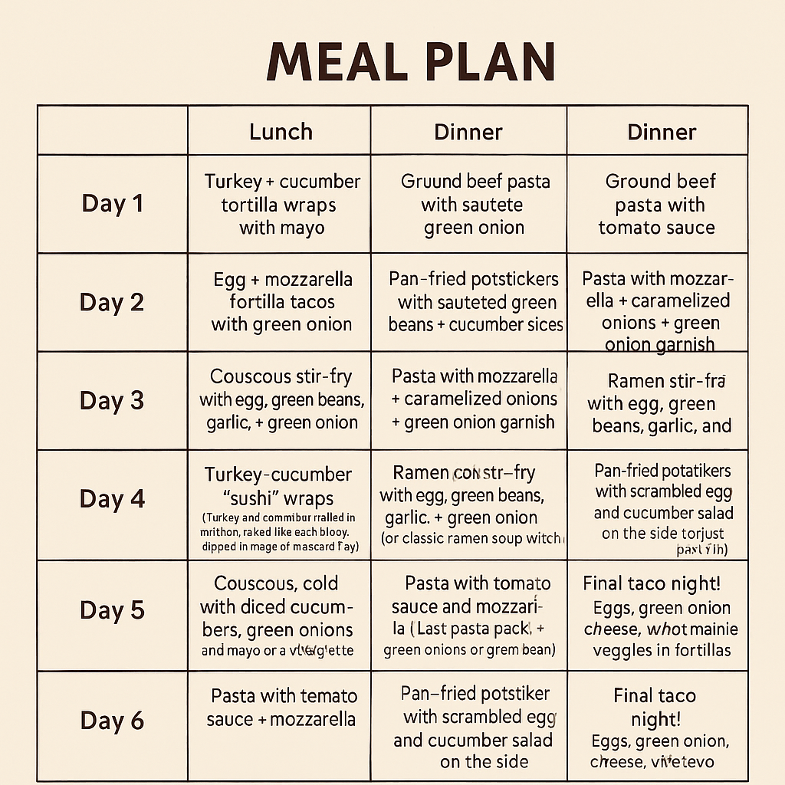

Can an LLM come up with easy, realistic meal prep plans with whatever I have in my fridge?
As the school year comes to an end, I am faced with a struggle familiar to too many college students. My fridge (and freezer) are full of a mishmosh of ingredients and foodstuffs that I don’t know how to use together. I am turning to an LLM to help me create a list of ideas to make quick, easy, and tasty meals.
Can ChatGPT give me a list of efficient, yummy meals with all the ingredients I have?

Prompting ChatGPT about this
Prompt
Hi! My semester ends in two weeks and I have a random assortment of food and ingredients in my fridge/pantry. can you help me come up with ideas to make meals that are quick, easy, and tasty?
Response
Absolutely, I got you! Just tell me what ingredients you have in your fridge and pantry (be as random or detailed as you want), and I’ll turn that chaos into a lineup of easy, tasty meals you can actually make.
Feel free to list things like: - Proteins (eggs, canned tuna, chicken, tofu…) - Veggies (fresh, frozen, or even a half-onion from two weeks ago lol) - Grains (rice, pasta, tortillas, bread) - Sauces/condiments (soy sauce, pesto, hot sauce, mayo, etc.) - Dairy (cheese, milk, yogurt) - Snacks that could moonlight as ingredients (chips, hummus, etc.)
Once I have the inventory, I’ll whip up a meal plan with minimal effort and maximum flavor 👩🍳
Prompt
- ground beef
- 3 packs of pasta
- frozen potstickers
- 2 packs of pearlized couscous
- minced garlic
- mayo
- turkey breast
- 3 cucumbers
- frozen green beans
- tomato sauce
- 2 yellow onions
- five green onions
- one pack of instant ramen noodles
- 2 noodle soup packets
- tortillas
- mozzarella cheese
- one dozen eggs
Response
Oooooh you actually have a great stash to work with. Here are some fast, flavorful meals you can make over the next two weeks using what you’ve got — no extra grocery trips required:
🔥 1. Weeknight Bolognese
Use: Ground beef, pasta, tomato sauce, yellow onion, garlic
How:
Sauté diced onion and minced garlic, brown the beef, then add tomato sauce. Simmer for ~10 minutes. Toss with pasta.
Bonus: Top with green onions or mozzarella if you’re feeling fancy.
🌯 2. Ground Beef & Cheese Tortilla Wraps
Use: Ground beef, tortillas, mozzarella cheese, onion
How:
Cook the beef with onion + garlic, season with salt, pepper, chili flakes (if you have), then melt mozzarella on tortillas and wrap it all up like a quesadilla or burrito.
🍳 3. Egg Fried Couscous
Use: Pearl couscous, eggs, green onions, garlic, frozen green beans
How:
Cook couscous, then fry in a pan with scrambled eggs, chopped green beans, garlic, and green onion. Stir-fry style.
🥒 4. Cucumber & Turkey Cold Wraps
Use: Tortillas, turkey breast, cucumbers, mayo
How:
Slice cucumbers thin, layer turkey and a bit of mayo in tortillas, roll up for a fresh wrap. Quick lunch or snack!
🍝 5. Ramen Stir Fry
Use: Instant ramen noodles, egg, garlic, green onion, green beans
How:
Boil ramen (skip the packet if you want), then stir-fry with scrambled egg, garlic, veggies, and green onions. Add the ramen seasoning or just soy sauce/sriracha if you have.
🥟 6. Potsticker Bowl
Use: Potstickers, green beans, cucumbers
How:
Pan-fry or steam potstickers, serve over green beans + thin-sliced cucumber tossed in vinegar or soy sauce if available. Add green onion on top.
🍳 7. Cheesy Egg Tortilla Tacos
Use: Tortillas, eggs, mozzarella cheese, green onion
How:
Scramble or fry eggs, place in tortillas with melty mozzarella and green onions. Done in 5 mins.
🍝 8. Creamy Pasta Hack (If You’re Out of Sauce)
Use: Pasta, mayo, garlic, mozzarella
How:
Mix cooked pasta with a spoon of mayo, garlic, and mozzarella for a weirdly good creamy base. Add green onions or cucumbers if you’re brave.
Would you like a suggested 7-day plan to use up the ingredients evenly, or are you more of a “vibe check each day” kind of chef? 😄
Prompt
A suggested plan would be great
Response
Perfect! Here’s a 7-day meal plan using what you’ve got — balanced to use up fresh stuff before it goes bad and to keep things interesting. Each day has lunch + dinner options (or swap as needed). I’ve added little notes for shortcuts or swaps if you’re tired or lazy (no judgment 😅).
🍽️ Day 1
- Lunch: Turkey + cucumber tortilla wraps with mayo
(Fresh, crunchy, fast) - Dinner: Ground beef pasta with tomato sauce and sautéed onions & garlic
(Use 1/3 of the ground beef and one pasta pack)
🍽️ Day 2
- Lunch: Egg + mozzarella tortilla tacos with green onion
(Add garlic if you’re feeling spicy) - Dinner: Pan-fried potstickers with sautéed green beans + cucumber slices
(Drizzle with soy sauce or hot sauce if available)
🍽️ Day 3
- Lunch: Couscous stir-fry with egg, green beans, garlic, and green onion
- Dinner: Pasta with mozzarella + caramelized onions + green onion garnish
(You’ll be shocked how good this simple combo is)
🍽️ Day 4
- Lunch: Turkey-cucumber “sushi” wraps (roll turkey + cucumber in tortillas, slice like sushi bites, dip in mayo or mustard if you have it)
- Dinner: Ramen stir-fry with egg, green beans, garlic, and green onion
(Or just classic ramen soup with an egg poached in)
🍽️ Day 5
- Lunch: Couscous again — this time cold with diced cucumbers, green onions, and mayo or a vinaigrette-style mix
- Dinner: Ground beef cheesy tortillas (quesadilla style with beef + mozzarella + onion)
🍽️ Day 6
- Lunch: Pasta with tomato sauce and mozzarella
(Last pasta pack! Add green onions or green beans if you want)
- Dinner: Potstickers again (you have a lot!) with scrambled egg and cucumber salad on the side
🍽️ Day 7
- Lunch: Leftover couscous + green beans + egg
(Make it a bowl with mayo/garlic/green onion or just season well)
- Dinner: Final taco night! Eggs, green onion, cheese, whatever veggies are left — wrap it all up in tortillas for a clean-out-the-fridge feast
🧊 Leftover Check:
- You’ll likely still have:
- 1–2 eggs
- Some mayo
- Maybe a bit of turkey
- Green onions or cucumber scraps
Use those for snacks, a last-minute wrap, or bonus egg fried rice if you find leftover rice hiding somewhere.
- 1–2 eggs
Want me to make a printable or visual version of this plan for your fridge?
Prompt
thank you, yes!

My Reflection
I wish I consulted chatgpt earlier in the semester! The LLM honestly did a great job at crafting a week full of meals that I would actually make! I think I may just end up actually trying out some of these meals. Excited to see what else it can come up with when I have different ingredients and food items to use.